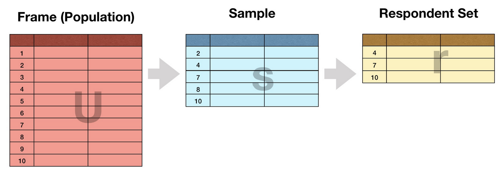
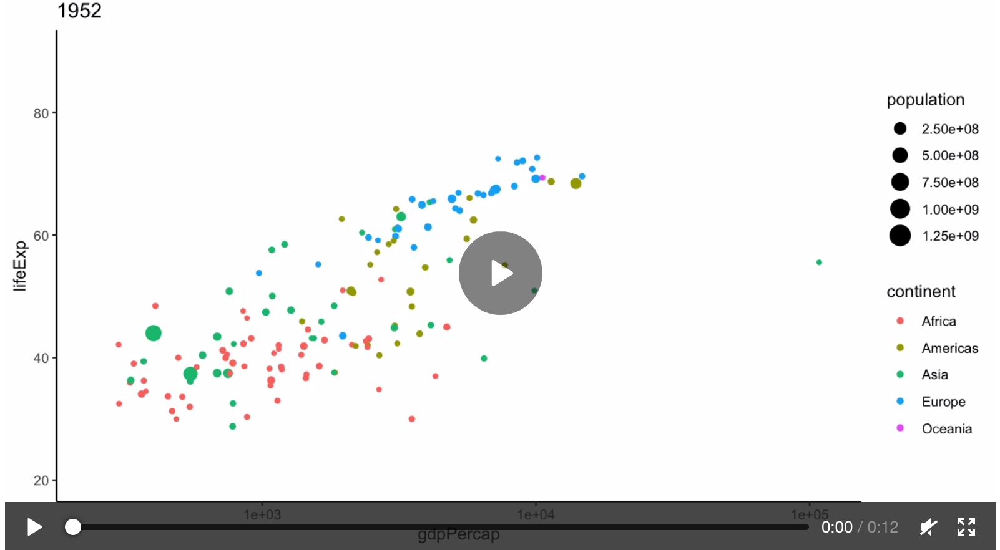
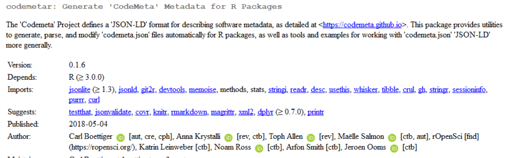

Oct 15, 2018
rOpenSci HQ
- The rOpenSci team at upcoming events:
- Nov 15, Seoul, Korea, Nick Tierney, R User Conference in Korea
- We’re having a community call tomorrow. See a recent blog post for all the details. Community Call - Code Review in the Lab, or … How do you review code that accompanies a research project?.
Software 📦
CRAN:  GitHub:
GitHub: 
New versions
- A new version (
v0.2.0) ofcrmineris on CRAN - Fetch scholarly full text from Crossref. See the release notes for changes. Checkout the README to get started.

can now set full cache path more easily
- A new version (
v0.5.0) ofhoardris on CRAN - Manage cached files. See the release notes for changes. Checkout the vignette to get started.
can now set full cache path more easily
- A new version (
v1.2.3) ofGSODRis on CRAN - Global surface summary of the day (GSOD) weather data client. See the release notes for changes. Checkout the docs to get started.
bug fixes and many minor changes
- A new version (
v0.2.8) ofweathercanis on CRAN - Download weather data from the Environment and Climate Change Canada website. See the NEWS for changes. Checkout the docs to get started.
minor fixes
- A new version (
v1.2) ofantiwordis on CRAN - Extract text from Microsoft Word documents. See the release notes for changes. Checkout the README is get started.
fix gcc8 warning
- A new version (
v0.3) ofsshis on CRAN - Secure shell (SSH) client for R. See the release notes for changes. Checkout the vignette is get started.
fix gcc8 warnings; update libssh to v0.8.3
- A new version (
v1.4.2) ofijtiffis on CRAN - Comprehensive TIFF I/O with full support for ImageJ TIFF files. See the release notes for changes. Checkout the docs to get started.
Solaris fixes
- A new version (
v0.0.8) ofpiggybackis on CRAN - Managing larger data on a GitHub repository. See the NEWS for changes. Checkout the docs to get started.
update docs; remove dependency on
utils::askYesNo - A new version (
v2.0) ofmagickis on CRAN - Advanced graphics and Image-Processing in R. See the release notes for changes. Checkout the vignette is get started.
split manual page because examples take too long
- A new version (
v0.2.2) ofcomtradris on CRAN - Interface with the United Nations Comtrade API. See the release notes for changes. Checkout the vignette to get started.
remove unused dependency
methodsfrom Imports - A new version (
v1.1.19) ofrtikais on CRAN - R Interface to Apache Tika. See the NEWS for changes. Checkout the docs to get started.
new
java()function to help usability - A new version (
v0.3.0) ofaukis on CRAN - eBird data extraction and processing. See the NEWS for changes. Checkout the docs to get started.
new functions and many fixes and improvements
- A new version (
v0.3.2) ofNLMRis on CRAN - Simulating neutral landscape models. See the NEWS for changes. Checkout the docs to get started.
Software Review ✔
We accept community contributed packages via our onboarding system - an open software review system, sorta like scholarly paper review, but way better. We’ll highlight newly onboarded packages here. A huge thanks to our reviewers, who do a lot of work reviewing (see the blog post on our review system), and the authors of the packages!
If you want to be a reviewer fill out this short form, and we’ll ping you when there’s a submission that fits in your area of expertise.
The following packages recently went through our onboarding process and have been approved!
- colocr > Conduct Co-localization Analysis of Fluorescence Microscopy Images
- Author: Mahmoud Ahmed
- Issue: ropensci/onboarding#243
- Reviewers:
- CoordinateCleaner > Automated Cleaning of Occurrence Records from Biological Collections
- Author: Alexander Zizka
- Issue: ropensci/onboarding#199
- Reviewers:
The following packages were recently submitted:
- wateRinfo > Download Time Series Data from Waterinfo.be
- Author: Stijn Van Hoey
- Issue: ropensci/onboarding#255
- Reviewers: not assigned yet
- refnet > Thomson Reuters Web of Knowledge/Science and ISI Reference Data Tools
- Author: Auriel Fournier
- Issue: ropensci/onboarding#256
- Reviewers: not assigned yet
- nbaR > R Package Client for the Netherlands Biodiversity API
- Author: Hannes Hettling
- Issue: ropensci/onboarding#257
- Reviewers: not assigned yet
On the blog
Software Review / Onboarding
Rafael Pilliard Hellwig wrote about his recently rOpenSci reviewed package outcomerate: outcomerate: Transparent Communication of Quality in Social Surveys. The review: ropensci/onboarding#213

Thomas Klebel wrote about his recently rOpenSci reviewed package jstor: Parsing Metadata with R - A Package Story. It includes some great lessons learned about package development. The review: ropensci/onboarding#189
Technotes
Our own Jeroen Ooms wrote about a new package av: The av Package: Production Quality Video in R. Check out the package at ropensci/av

Our own Maëlle Salmon wrote about how to Distinguish yourself in CRAN person() with ORCID.

rOpenSci HQ
Stefanie Butland writes about our upcoming community call (tomorrow!). Community Call - Code Review in the Lab, or … How do you review code that accompanies a research project?. Please join us for our next community call; this is going to be a good one.
Use cases
The following 15 works use/cite rOpenSci software:
- Gye-Soo used tokenizers in their paper Text Mining and Big Data Analysis in the Relational Database with R 1
- Merkling et al. used our package rotl in their paper Maternal Testosterone and Offspring Sex-Ratio in Birds and Mammals: A Meta-Analysis 2
- Pfeffer et al. used spocc in their paper malariaAtlas: an R interface to global malariometric data hosted by the Malaria Atlas Project 3
- Gadelha et al. used rgbif in their preprint A Survey of e-Biodiversity: Concepts, Practices, and Challenges 4
- Kimmelman, V., Klezovich, A., & Moroz, G. used lingtypology in their paper IPSL: A Database of Iconicity Patterns in Sign Languages 5
- Sánchez et al. used rotl in their paper On the relationship between body condition and parasite infection in wildlife: a review and meta‐analysis 6
- Denecker & Lelandais used plotly in their paper Empowering the detection of ChIP-seq “basic peaks” (bPeaks) in small eukaryotic genomes with a web user-interactive interface 7
- Wylie et al. used plotly in their paper Evaluation of patient- versus provider-collected vaginal swabs for microbiome analysis during pregnancy 8
- Davydov used plotly in their white paper Forecasting Retirements: The Case of the New York City Government Workforce 9
- Johnson et al. used plotly in their paper Deep proteomic network analysis of Alzheimer’s disease brain reveals alterations in RNA binding proteins and RNA splicing associated with disease 10
- Haddaway & Westgate used plotly in their paper Predicting the time needed for environmental systematic reviews and systematic maps 11
- Schmidt cited textreuse in his paper Stable random projection: lightweight, general-purpose dimensionality reduction for digitized libraries 12
- Becker et al. used rotl in their paper Handling stress and sample storage are associated with weaker complement-mediated bactericidal ability in birds but not bats 13
- Roettger & Gordon used lingtypology in their paper Methodological issues in the study of word stress correlates 14
- Kollar et al. used plotly in their paper Increased levels of circulating MMP3 correlate with severe rejection in face transplantation 15
In the news
Ryo Nakagawara used riem, by our own Maëlle Salmon, in a blog post about weather in Japan
new #rstats blog post 📝: Visualizing the Weather ☀️🌧️in #Japan 🇯🇵!
— ⚽️Ryo Nakagawara📊 (@R_by_Ryo) October 4, 2018
Link: https://t.co/Dk0tGGAois
Special thanks to:@ma_salmon for the riem 📦and @u_ribo for the jmastats 📦#ggplot2 #dataviz #weather #天気 #気象庁 pic.twitter.com/hs9S2JJ20s
Angela Li gave a workshop at the Center for Spatial Data Science (CSDS) at Univrersity of Chicago for State of the Map 2018 event. In the materials for her GitHub repository https://github.com/angela-li/sotmus-r she uses our package osmdata
In a package from the company dreamRs (Victor Perrier and Fanny Meyer) they use our package geojsonio
We have updated our {topogram} htmlwidget : create interactive cartograms in D3 within R! It now accepts any #sf object thanks to #geojsonio ! Here's an example with 🍷 data and a base map from #eurostat package! #rstatshttps://t.co/PJ9GTopP55 pic.twitter.com/1bUBt8lROZ
— dreamRs (@dreamRs_fr) October 9, 2018
Keep up with rOpenSci
- Mailing list: Sign up with an email address to get this newsletter sent to your inbox -> ropensci.org/#subscribe
- Alternatively, you can subscribe to this newsletter via our XML feed at https://news.ropensci.org/feed.xml or our JSON feed at https://news.ropensci.org/feed.json
- rOpenSci on Twitter: @ropensci
- The rOpenSci blog at ropensci.org/blog - you can subscribe in any RSS aggregator, or manually via https://ropensci.org/feed.xml. We also announce new blog posts on our Twitter account.
Footnotes
-
Gye-Soo, K. 2018. Text Mining and Big Data Analysis in the Relational Database with R. International Journal of Trend in Research and Development. 4(5): 384-386. http://www.ijtrd.com/papers/IJTRD12170.pdf ↩
-
Merkling, T., Nakagawa, S., Lagisz, M., & Schwanz, L. E. (2017). Maternal Testosterone and Offspring Sex-Ratio in Birds and Mammals: A Meta-Analysis. Evolutionary Biology, 45(1), 96–104. https://doi.org/10.1007/s11692-017-9432-9 ↩
-
Pfeffer, D. A., Lucas, T. C. D., May, D., Harris, J., Rozier, J., Twohig, K. A., … Gething, P. W. (2018). malariaAtlas: an R interface to global malariometric data hosted by the Malaria Atlas Project. Malaria Journal, 17(1). https://doi.org/10.1186/s12936-018-2500-5 ↩
-
Gadelha Jr, L. M., de Siracusa, P. C., Ziviani, A., Dalcin, E. C., Affe, H. M., de Siqueira, M. F., … & Costa, R. L. (2018). A Survey of e-Biodiversity: Concepts, Practices, and Challenges. arXiv preprint arXiv:1810.00224 https://arxiv.org/abs/1810.00224 ↩
-
Kimmelman, V., Klezovich, A., & Moroz, G. (2018). IPSL: A Database of Iconicity Patterns in Sign Languages. Creation and Use. In LREC. http://vadimkimmelman.com/papers/Kimmelman%20Klezovich%20Moroz%202018%20IPSL.pdf ↩
-
Sánchez, C. A., Becker, D. J., Teitelbaum, C. S., Barriga, P., Brown, L. M., Majewska, A. A., … & Altizer, S. 2018. On the relationship between body condition and parasite infection in wildlife: a review and meta‐analysis. Ecology Letters. https://onlinelibrary.wiley.com/doi/abs/10.1111/ele.13160 ↩
-
Denecker, T., & Lelandais, G. (2018). Empowering the detection of ChIP-seq “basic peaks” (bPeaks) in small eukaryotic genomes with a web user-interactive interface. BMC Research Notes, 11(1). https://doi.org/10.1186/s13104-018-3802-y ↩
-
Wylie, K. M., Blankenship, S. A., Tuuli, M. G., Macones, G. A., & Stout, M. J. (2018). Evaluation of patient- versus provider-collected vaginal swabs for microbiome analysis during pregnancy. BMC Research Notes, 11(1). https://doi.org/10.1186/s13104-018-3809-4 ↩
-
Davydov, Y. Forecasting Retirements: The Case of the New York City Government Workforce. https://data.bloomberglp.com/company/sites/2/2018/09/retirement-forecasting.pdf ↩
-
Johnson, E. C. B., Dammer, E. B., Duong, D. M., Yin, L., Thambisetty, M., Troncoso, J. C., … Seyfried, N. T. (2018). Deep proteomic network analysis of Alzheimer’s disease brain reveals alterations in RNA binding proteins and RNA splicing associated with disease. Molecular Neurodegeneration, 13(1). https://doi.org/10.1186/s13024-018-0282-4 ↩
-
Haddaway, N. R., & Westgate, M. J. (2018). Predicting the time needed for environmental systematic reviews and systematic maps. Conservation Biology. https://doi.org/10.1111/cobi.1323 ↩
-
Schmidt, B. (2018). Stable random projection: lightweight, general-purpose dimensionality reduction for digitized libraries. Journal of Cultural Analytics. https://doi.org/10.22148/16.025 ↩
-
Becker, D., Czirják, G., Rynda-Apple, A., & Plowright, R. (2018). Handling stress and sample storage are associated with weaker complement-mediated bactericidal ability in birds but not bats. Physiological and Biochemical Zoology. https://doi.org/10.1086/701069 ↩
-
Roettger, T., & Gordon, M. (2017). Methodological issues in the study of word stress correlates. Linguistics Vanguard, 3(1). http://www.linguistics.ucsb.edu/faculty/gordon/Roettger&Gordon_AcousticMethodologoy.pdf ↩
-
Kollar, B., Shubin, A., Borges, T. J., Tasigiorgos, S., Win, T. S., Lian, C. G., … Riella, L. V. (2018). Increased levels of circulating MMP3 correlate with severe rejection in face transplantation. Scientific Reports, 8(1). https://doi.org/10.1038/s41598-018-33272-7 ↩